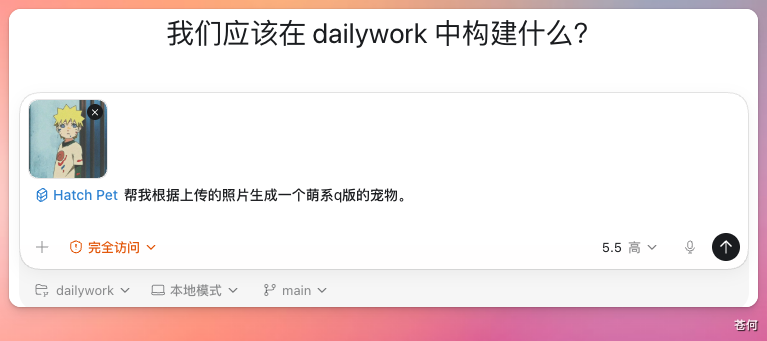
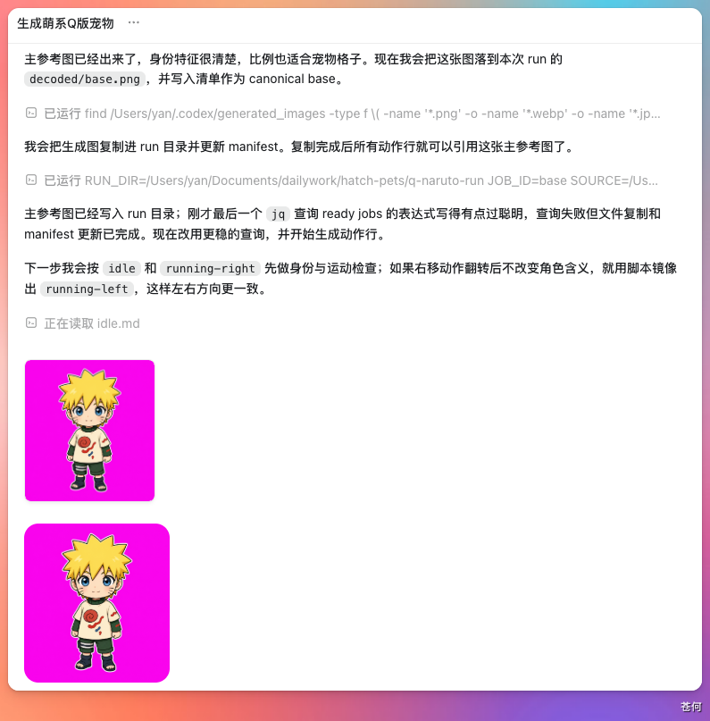
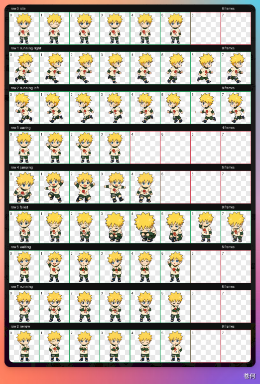
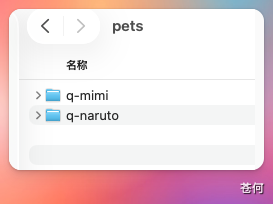

15 实战案例
Codex × Hatch Pet：用一张照片生成专属宠物
Codex 内置了一个宠物系统——Hatch Pet。
本站同步：案例已从后台资料源同步为站内页面，可直接阅读；账号、付款、权限、客户数据等敏感动作请人工确认。
Codex 内置了一个宠物系统——Hatch Pet。
你不仅可以从现有宠物中选择，还可以用一张照片生成专属动画宠物，让编程时有一只独一无二的电子宠物。
本篇介绍如何用 Codex 的 Hatch Pet 功能，快速制作自定义宠物。
1. 打开 Hatch Pet
在对话框中输入 /，选择「Hatch Pet」。

2. 上传素材并生成
上传一张图片（头像、照片都可以），然后输入提示词：
/Hatch Pet 帮我根据上传的照片生成一个萌系 Q 版的宠物。

Codex 会自动完成风格转换、生成帧数、添加动画效果。

生成过程中会显示进度提示：

生成时间通常需要 1-3 分钟，请耐心等待。
3. 选择宠物
生成完成后，在「自定义宠物」区域点击选择，专属宠物就诞生了。

最终效果：
生成后的动画效果可以在 Codex 的自定义宠物列表和输出目录中查看。
宠物包输出位置：

4. 分享与安装
分享给朋友： 将宠物文件压缩后发送即可，将宠物文件放到以下路径。
~/.codex/pet
5. 提示词参考
| 风格 | 提示词示例 |
|---|---|
| 萌系 Q 版 | 生成一个萌系 Q 版的宠物，大眼睛，可爱风格 |
| 像素风 | 生成一个像素风格的宠物，复古游戏风格 |
| 赛博朋克 | 生成一个赛博朋克风格的宠物，霓虹配色 |
| 水彩风 | 生成一个水彩风格的宠物，柔和配色 |
| 极简风 | 生成一个极简风格的宠物，线条简洁 |
常见问题
生成的宠物不满意怎么办？
- 更换素材图片，使用更清晰的照片
- 调整提示词，增加更多风格描述
- 多生成几次，选择最佳效果
宠物动画卡顿怎么办？
- 检查 Codex 是否为最新版本
- 尝试重新选择宠物
- 重启 Codex App
如何删除自定义宠物？
进入 ~/.codex/pet 目录，删除对应的宠物文件夹即可。